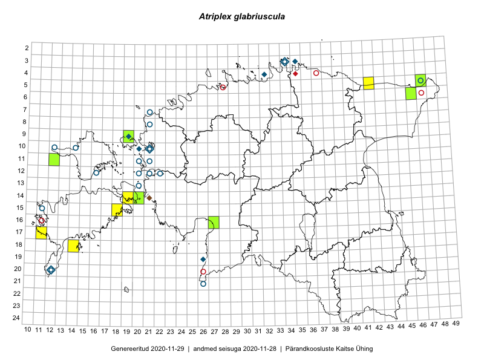

Atriplex glabriuscula
Uuendatud: 2016-12-01
Kaardile koondatud taksonid: Atriplex glabriuscula Edmondston

Kaart põhineb 5 kirjel.
Viited andmebaasikirjetele
Kaardile koondatud taksonid: Atriplex glabriuscula Edmondston
Kaart põhineb 5 kirjel.
Viited andmebaasikirjetele